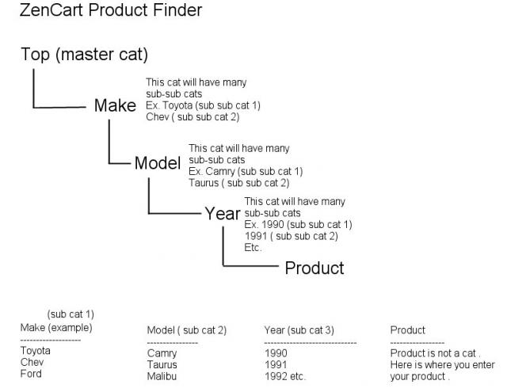
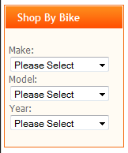

What does this mod do?
This mod provides three drop-down select boxes which are used to select products from top category - subcat01 - subcat02 - subcat03.
The second and third drop-down are populated dynamically (using jquery) as a result of the choice made in the previous box, in my case this is used as Make-Model-Year.
The mod is designed to work with this category structure:
top-category (eg Bikes) -
sub-category level 1 (eg Bike Manufacturer) -Each subcategory is a drop-down.subsub-category level 2 (eg Bike model) -subsubsub-category level3 (eg Bike model year or year range) - which contains the products
As supplied in this package, the drop drowns are integrated into the header.
This chart provided in the forums by Jerr may prove useful during setup of your categories - for a larger version, click on picture below or open zencart cat.jpg

Why?
To replace a long static list in a sidebox.
How it works on my site
I have three master categories
- Manufacturers: this is arranged as per the product families from my suppliers and are the master categories for all my products.
- Product Types: the normal types-of-products categories. All items here are linked from the manufacturers master.
- Your Bike (of motorcycle): subcategory of bike brands, then subsub of models, then subsubsub of years (such as 2001, 2002-3, 2004 etc). All items here are linked from the manufacturers master.
This mod replaces the sidebox that would show the third set of categories.
It shows up like this
and with javascript disabled
side box shows up like this

and with javascript disabled

Installation
New install
BACKUP FILES AND DATABASE
Copy the files into the correct directories.
The files marked with the YOUR_TEMPLATE_NAME path need to go into your template directories, NOT into directories literally called "YOUR_TEMPLATE_NAME".
tpl_header.php - contains the code chunk to display the new section.
There are some database changes these will auto install as soon as you log in to your admin.
Upgrade
When upgrading from a previous version, please use the file list as a guide to see which file have been changed. After aplying the file changes, log in to your Zen Cart admin, to complete the installation. The database changes, if needed, will be executed automatically
Un-install
Use the file list to remove all the files, and changes made for this mod. Then log in to your Zen Cart Admin, and run the product_finder_uninstall.sql (found in the uninstall folder) in Admin=>Tools=>Install SQL Patches
File List
| Version 0.92 | Version 1.0.0 | Status | |
|---|---|---|---|
| includes | includes | ||
| │ | ├ classes | ||
| │ | │└ ajax | ||
| │ | │ └zcAjaxProductFinderCats.php | New (replaces modellist.php) | |
| ├ functions | ├ functions | ||
| │└ extra_functions | │└ extra_functions | ||
| │ └product_finder.php | │ └product_finder_functions.php | Renamed, Code changes | |
| ├ languages | ├ languages | ||
| │├ english | │└ english | ||
| ││└ extra_definitions | │ └ extra_definitions | ||
| ││ └product_finder.php | │ └product_finder.php | Renamed, Code changes | |
| │└ spanish | │ | ||
| │ └ extra_definitions | │ | ||
| │ └product_finder.php | │ | Deleted | |
| │ | ├ modules | ||
| │ | │└ sideboxes | ||
| │ | │ └product_finder.php | New | |
| └ templates | └ templates | ||
| └ YOUR_TEMPLATE_NAME | └ YOUR_TEMPLATE_NAME | ||
| ├ buttons | ├ buttons | ||
| │├ english | │└ english | ||
| ││└go.gif | │ └go.gif | ||
| │└ spanish | │ | ||
| │ └go.gif | │ | Deleted | |
| ├ common | ├ common | ||
| │├html_header.php | ││ | ||
| │└tpl_header.php | │└tpl_header.php | ||
| ├ css | ├ css | ||
| │└stylesheet_product_finder.css | │└stylesheet_product_finder.css | ||
| └ jscript | ├ jscript | ||
| ├jquery-1.3.2.min.js | ││ | ||
| └jscript_model_year.php | ││ | ||
| │└jscript_product_finder.php | |||
| ├ sideboxes | |||
| │└tpl_product_finder.php | |||
| └ templates | |||
| └tpl_product_finder.php | |||
| YOUR_ADMIN | |||
| └ includes | |||
| ├ auto_loaders | |||
| │└config.product_finder.php | |||
| ├ init_includes | |||
| │└init_product_finder.php | |||
| ├ installers | |||
| │└ product_finder | |||
| │ └1_0_0.php | |||
| └ languages | |||
| └ english | |||
| └ extra_definitions | |||
| └product_finder.php | |||
| modellist.php |
Configuration
IMPORTANT
You have to tell the code which top-level category to start from.
In /includes/functions/extra_functions/product_finder_sidebox.php
around line 56 look for
function zen_get_category_tree($parent_id = '99', $category_tree_array = '') {
The 99 is my top-level category, change it to yours.
How to test it
You will need a top-level category, then a sub 1, then a sub 2, then sub 3 and then an enabled product in sub 3. Untill there is a product in (or linked to)sub 3 nothing will populate the drop down menus.
Put the correct id for the top level category in
/includes/functions/extra_functions/product_finder.php
and the dropdowns should show the sub 1 - sub 2 - sub 3.
I have dropped these files directly into a copy of classic and it works as described.
Category Names
The category names should not contain ^ or | symbols. These are used as delimiters within the code.
Support
From the community only at http://www.zen-cart.com/forum/showthread.php?p=918403
Version History
| Version: | 1.0.0 | |
| Release Date: | 28-04-2019 | |
| Zen Cart Versions: | 1.5.5, 1.5.6 | |
| Author: | Zen4All | |
| Changes: |
|
|
|
|
||
| Version: | 0.92 | |
| Release Date: | 27-01-2019 | |
| Zen Cart Versions: | 1.3.9 | |
| Author: | miketaps | |
| Changes: |
|
|
|
|
||
| Version: | 0.91 | |
| Release Date: | 29-09-2010 | |
| Zen Cart Versions: | 1.3.9 | |
| Author: | Torvista | |
| Changes: |
|
|
|
|
||
| Version: | 0.9 | |
| Release Date: | 2010-08-05 first upload to Zen Cart community | |
| Zen Cart Versions: | 1.3.9 | |
| Author: | Torvista | |
- License: GPL 2.0 as per included LICENSE
- Author: originally developed by Terranetworks for torvista.
- Version: 0.91 2010-09-29
- Support Thread: https://www.zen-cart.com/forum/showthread.php?p=918403